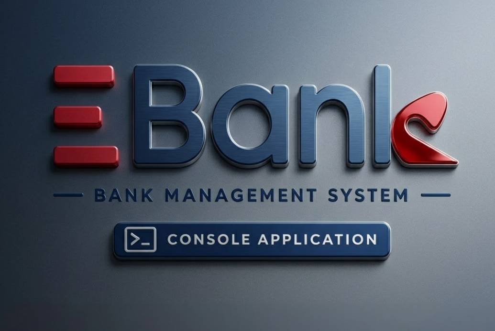
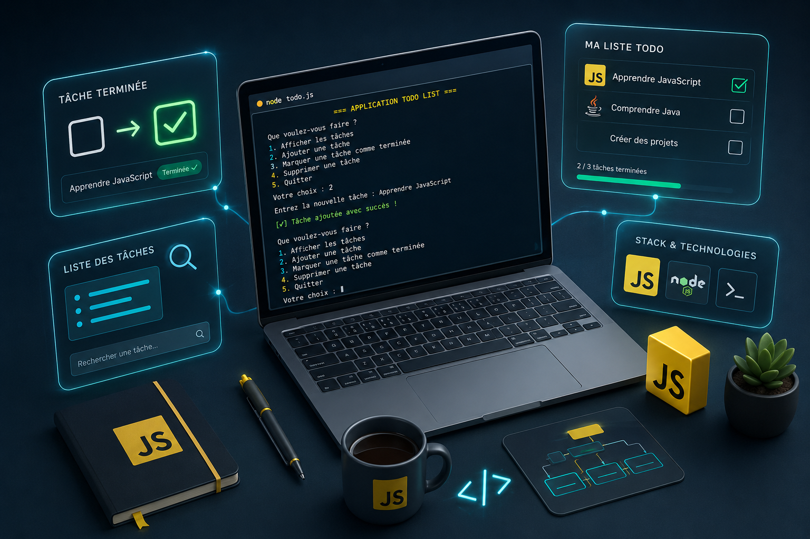
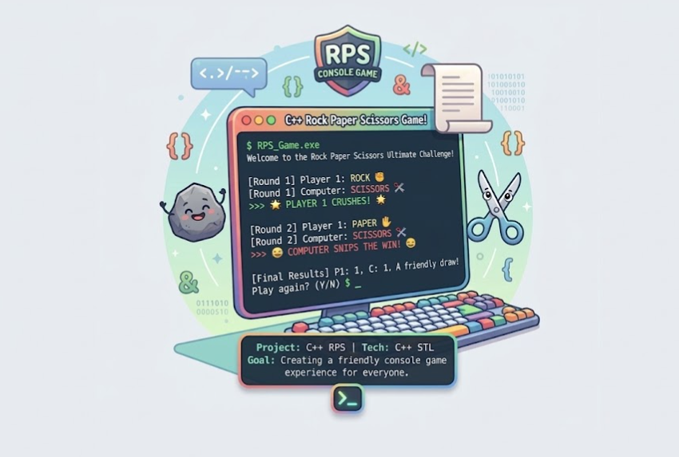
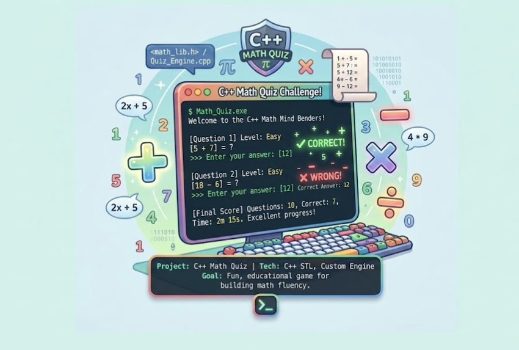

Hi, my name is
Youssef Errachid.
|
I'm a self-driven Full-Stack Developer specializing in building (and occasionally designing) exceptional digital experiences. Currently, I'm focused on building accessible, human-centered products and expanding my technological horizons.
About Me
Hello! My name is Youssef and I enjoy creating things that live on the internet. My interest in software development started back when I began dissecting complex problems and realized the power of architecting elegant solutions.
At 25, my journey is driven by an unwavering passion for technology and a proactive, self-taught approach. Fast-forward to today, I dedicate my time to personal projects, mastering robust backend logic, and crafting intuitive user interfaces.
Here are a few principles that drive my work:
- Algorithmic Prowess
- Project-Centric Dev
- Full-Stack Aspiration
- Perpetual Growth
My Journey
Full-Stack Development Journey
Self-Directed Learning & Projects
Intensively building project-based skills through platforms like freeCodeCamp and The Odin Project. Developing robust desktop and web applications to solidify core concepts in OOP, databases, and modern frameworks.
Foundation in Technology
School of Technology (EST), Khenifra
Completed foundational studies in technology, acquiring core analytical and technical skills that set the stage for my transition into software engineering.
Baccalaureate in Life and Earth Sciences
High School Diploma
Graduated with a focus on scientific disciplines, fostering a strong methodical and problem-solving mindset.
Technical Arsenal
Languages
Web Technologies
Databases
Tools & Concepts
Some Things I've Built
e-Social Systems – Enterprise Social Security Application
A full-stack Java EE web application designed to simulate an institutional social security system (like CNSS) managing employers, insured workers, monthly salary declarations, and complex contribution logic. Built using enterprise architecture, this system manages the intricate business workflows of corporate social declarations. It leverages JPA (Java Persistence API) and Hibernate for ORM mapping over a relational MySQL/PostgreSQL database, enforcing data integrity for multi-column unique constraints (Employer, Month, Year). The application features an automatic calculations engine executing localized legal rules for employee vs. employer contribution splits under a designated contribution ceiling, tracks dynamic history profiles, and renders records through programmatic JSP views orchestrated by native Java Servlets.
FinPay – Payment & Invoicing Management System
A Java-based FinTech management system that centralizes and secures electronic payments between clients, service providers, and the FinPay platform. It allows managing clients, providers, invoices, and payments with automatic commission calculation, payment tracking, and financial statistics. The system supports partial payments, invoice status updates, and full transaction history, simulating a real-world payment gateway used by clinics and service companies. It also includes reporting features and document generation such as PDF invoices and payment receipts, along with Excel exports for financial reporting and analysis.
XTrade – Simplified Trading System
XTrade is a Java console application developed using Object-Oriented Programming principles to simulate a simplified financial trading platform. The system allows traders to manage virtual portfolios, buy and sell financial assets such as stocks and cryptocurrencies, and track transaction history in a simulated market environment. It also includes portfolio performance analysis, transaction filtering and sorting using the Java Stream API, data validation, and export features for transaction history.

E-BANK – Bank Management System
A Java console application built using Object-Oriented Programming principles that simulates basic banking operations. It allows managing customers and accounts, including creating accounts, deposits, withdrawals, balance checks, transfers, and account deletion. The system also supports savings accounts with interest calculation and includes data validation to ensure secure and reliable transactions.
EduManager – Online Course Management System
A Java console application designed around core Object-Oriented Programming (OOP) principles to simulate an online learning platform ecosystem. This application manages bidirectional relationships between distinct entity models, including Students, Instructors, and Courses. It implements clean data binding mechanisms where student registrations dynamically update course rosters, and instructor assignments update individual course states. The project heavily relies on Java Collections framework APIs (specifically ArrayLists) to handle custom lookups, avoid duplicate entries using lookups, and feature defensive terminal input buffering with robust type validation to avoid runtime crash loops.
BiblioManager – Library Management System
A relational JavaScript console application built with Node.js that simulates a library infrastructure managing books, subscribers, and transaction states. This terminal application implements a multi-layered nested menu architecture to handle core library logistics. It supports dynamic creation and structural validation for inventory items, subscriber registration with automated incremental IDs, and real-time state mutations. The system mimics data normalization across multiple object arrays, handling explicit validation flags to check tracking availability, enforce existing keys, prevent multi-borrow conflicts, and dynamically manage session dates.

Taskify – Interactive To-Do List Manager
A clean JavaScript console application built with Node.js that performs full CRUD operations on an in-memory task database. This task manager handles data manipulation using array methods. It features dynamic addition, custom linear-search lookup filters, and dynamic array mutation. The system utilizes control structures to handle state toggles (completed vs. pending status) and implements runtime validation boundaries to prevent array index overflow during task updates or state transformations.
JS CALCULATOR – JavaScript Console App
A dynamic JavaScript console-based calculator that processes arithmetic and scientific operations with continuous history logging. Built using Node.js and user input synchronization, this application features an interactive terminal menu for executing operations such as addition, subtraction, multiplication, division, exponentiation, square roots, and factorials. It incorporates robust mathematical evaluation logic, zero-division error handling, dynamic input validation, and stores runtime session data into structured objects inside an array for clear post-execution activity tracking.

ROCK PAPER SCISSORS GAME – C++ Console App
A C++ console game where the player competes against the computer in Rock, Paper, Scissors. The game uses random number generation for computer moves and applies classic rules to determine the winner of each round. It tracks scores across multiple rounds, stores results using structs, and displays detailed game statistics including wins, losses, and draws. The project demonstrates structured programming concepts such as enums, functions, and control flow in C++.

MATH QUIZ GAME – C++ Console App
A C++ console-based quiz game that generates random math questions with different difficulty levels. The application challenges the player with arithmetic problems including addition, subtraction, multiplication, and division. It supports multiple difficulty levels, random question generation, and real-time answer validation. The system tracks correct and wrong answers and determines whether the player passes or fails the quiz. This project demonstrates structured programming using enums, structs, functions, and random logic in C++.
Want to see more of my work?
View all on GitHub05. What's Next?
Get In Touch
Although I'm not currently looking for any new opportunities, my inbox is always open. Whether you have a question or just want to say hi, I'll try my best to get back to you!